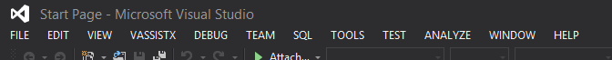
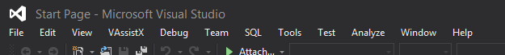

Vault7: CIA Hacking Tools Revealed
Navigation: » Directory
Owner: User #1179751
User #1179751
| Pages | Date | User |
|---|---|---|
Attachments:
{kind=link}
{kind=link}
Blog posts:
-
[User #1179751]: Making Bamboo Builds Available for Debugging.
The Windows build agents for Bamboo have been reconfigured to build everything on the T: drive. Doing this enables you to have a network share mounted as the T: drive and debug any code compiled on a build server. To do this you'll need to follow a couple of basic steps.
- Create a 'final' task in your plan to copy the build directory to a share location. I have one setup so this is literally a copy paste job.
- Select the job(s) that compiles your code.
- Click "Add task"
- Select "Script"
- Provide a description (I've used "Copy to Share")
- For script location select "Inline"
-
Paste the following code (you don't have to change anything):
Robocopy %bamboo_working_directory% %bamboo_networkDump%%bamboo_buildKey% /MIR /XF .git* /XD .git /R:6 /W:10 /MT:8 IF ERRORLEVEL 8 GOTO errorHandling exit /b 0 :errorHandling exit /b 1 - Select "Save"
- Make the task a "Final" task so it always runs.
- On your local dev box mount \\osb-1v.devlan.net\bamboo as the T: drive (use your devlan creds)
I'm going to keep working with some of this, but hopefully some dart scripts allowing for remote debugging and code coverage will be coming in the next couple of weeks.
Good luck and happy coding.
Quick Edit: If you don't like Robocopy mucking up your logs just send stdout to nul by adding "> nul" to the end of the first line.
- Create a 'final' task in your plan to copy the build directory to a share location. I have one setup so this is literally a copy paste job.
-
[User #1179751]: Help with multiple desktops - Windows 10
Hot keys:
- Win + Ctrl + D - New desktop
- Win + Ctrl + F4 - Close current desktop
- Win + Ctrl + <ARROW_LEFT> / <ARROW_RIGHT> - Cycle desktops
Move applications between desktops:
From the task view (Win + Tab), you can click on the different desktops you have open. When you click on the desktop with the application you want to move it will show it in the task view, right click on the application and you'll be able to select where to move the application.
-
[User #1179751]: Windows 10 / VMWare Issue
To save you the 5 seconds worth of googling (this is stolen from the top result). To allow for VMWare to run you need to disable hyper-v which is on by default in Windows 10.
To disable the already running service open the Hyper-V Manager and select "Stop Service" from the right hand menu.
To disable the automatic starting of said service run the following from an elevated command prompt:
bcdedit /set hypervisorlaunchtype offTo re-enable Hyper-V:
bcdedit /set hypervisorlaunchtype auto -
[User #1179751]: Visual Studio 2013 Update 5
Can be found at "fs-01\share\Windows Software Development Resources\Visual Studio 2013\Visual Studio 2013 Update 5"
-
[User #1179751]: Ready for IV&V...

-
[User #1179751]: Visual Studio 2013 Update 4 on Devlan
Get the latest hotness \\fs-01\share\Windows Software Development Resources\Visual Studio 2013\Visual Studio 2013 Update 4
-
[User #1179751]: Windows 10 Technical Preview On Devlan
The Windows 10 Technical Preview (32 and 64) is on DEVLAN. Go to \\fs-01\Share\OS DVDDigital Versatile Disk ISOs\Windows 10 Technical Preview
-
[User #1179751]: WTF ESET?
So stumbling through different PSPs and I came across eCapture which is installed with ESET Smart Security. eCapture allows you to take screenshots as well as webcam photos via the command line; not sure why this is, but maybe a chance for a stupid collection tool?
-
[User #1179751]: Visual Studio 2013 Update 3
User #77278 was kind enough to download update 3 for 2013, and it is on the share in the typical location. It has an option to turn of the all caps menu so some of you can stop complaining....
-
[User #1179751]: Offline MSDNMicrosoft Developer Network for Visual Studio 2013.
So this is a hack, if anyone knows a better way, please let me know. If you want to add offline MSDNMicrosoft Developer Network access to Visual Studio 2013 follow these steps:
- In Visual Studio select “Help” -> “Set Help Preferences” -> “Launch in Help Viewer”
- Open the help viewer by selecting “Help” -> “View Help”
- In the help viewer you should see a tab that says “Manage Content” open otherwise select “Manage Content” from the menu bar (looks like three books).
- Take note of what the “Local Store Path” is.
- Navigate to \\fs-01\share\Windows Software Development Resources\Visual Studio 2013\Help Content.
- Copy the entire contents of the above folder to the folder referenced in “Local Store path”, overwrite everything.
- Restart both help and visual studio.
From here on you should be able to access help by simply hitting F1.
Good luck and happy coding.
-
[User #1179751]: Using Visual Studio for Git Diff.
Visual studio has a pretty nice Diff and Merge tool, if you want to use it add or edit the below entries in your .gitconfig file (most likely in %user%\.gitconfig)
[merge] tool = vsdiffmerge [mergetool] prompt = true [mergetool "vsdiffmerge"] cmd = \"C:\\Program Files (x86)\\Microsoft Visual Studio 12.0\\Common7\\IDE\\vsdiffmerge.exe\" \"$REMOTE\" \"$LOCAL\" \"$BASE\" \"$MERGED\" //m keepbackup = false trustexistcode = true [diff] tool = vsdiffmerge [difftool] prompt = true [difftool "vsdiffmerge"] cmd = \"C:\\Program Files (x86)\\Microsoft Visual Studio 12.0\\Common7\\IDE\\vsdiffmerge.exe\" \"$LOCAL\" \"$REMOTE\" //t keepbackup = false trustexistcode = trueThis is for Visual Studio 2013, but it is also available in 2012 and you would just have to change the file paths.
-
[User #1179751]: NuGet is on Devlan.
For those of you lucky enough to be doing something in C# and want a library that is hosted in NuGet you now have an easy solution.
- In Visual Studio: Project -> Manage NuGet Packages
- Select "Settings"
- Click the plus icon to add a package source.
- Name = Local
- Source = \\fs-01\share\Windows Software Development Resources\NuGet
- Deselect nuget.org and Microsoft and .NET
- Hit Ok.
Back in the "Manage NuGet Packages" window, if you select Online it will list everything that is available. I'll be updating this periodically, mainly when I need it for one of my projects, but if you ask I'll update it.
-
[User #1179751]: Visual Studio 2013 Update 2
It's out and on the share at \\fs-01\share\Windows Software Development Resources\Visual Studio 2013\Visual Studio 2013 Update 2
-
[User #1179751]: MSDN Shortcut
One of my great annoyances with 2010+ was the move to the new help system and the loss of a start menu shortcut. I've found a work around:
Create a new shortcut with the following path: ""C:\Program Files (x86)\Microsoft Help Viewer\v2.1\HlpViewer.exe" /catalogName VisualStudio12". This was for a visual studio 2013 install, but you should be able to tweak it as needed.
-
[User #1179751]: Java is terrible.
That is all really.
-
[User #1179751]: While on the subject of .gitignore...
The official Visual Studio plugin creates an awesome one, but if you aren't using it this is an excellent start for those of you running VS.
## Ignore Visual Studio temporary files, build results, and ## files generated by popular Visual Studio add-ons. # User-specific files *.suo *.user *.sln.docstates # Build results [Dd]ebug/ [Rr]elease/ x64/ build/ [Bb]in/ [Oo]User #?/ # MSTest test Results [Tt]est[Rr]esult*/ [Bb]uild[Ll]og.* *_i.c *_p.c *.ilk *.meta *.obj *.pch *.pdb *.pgc *.pgd *.rsp *.sbr *.tlb *.tli *.tlh *.tmp *.tmp_proj *.log *.vspscc *.vssscc .builds *.pidb *.log *.scc # Visual C++ cache files ipch/ *.aps *.ncb *.opensdf *.sdf *.cachefile # Visual Studio profiler *.psess *.vsp *.vspx # Guidance Automation Toolkit *.gpState # ReSharper is a .NET coding add-in _ReSharper*/ *.[Rr]e[Ss]harper # TeamCity is a build add-in _TeamCity* # DotCover is a Code Coverage Tool *.dotCover # NCrunch *.ncrunch* .*crunch*.local.xml # Installshield output folder [Ee]xpress/ # DocProject is a documentation generator add-in DocProject/buildhelp/ DocProject/Help/*.HxT DocProject/Help/*.HxC DocProject/Help/*.hhc DocProject/Help/*.hhk DocProject/Help/*.hhp DocProject/Help/Html2 DocProject/Help/html # Click-Once directory publish/ # Publish Web Output *.Publish.xml *.pubxml # NuGet Packages Directory ## TODO: If you have NuGet Package Restore enabled, uncomment the next line #packages/ # Windows Azure Build Output csx *.build.csdef # Windows Store app package directory AppPackages/ # Others sql/ *.Cache ClientBin/ [Ss]tyle[Cc]op.* ~$* *~ *.dbmdl *.[Pp]ublish.xml *.pfx *.publishsettings # RIA/Silverlight projects Generated_Code/ # Backup & report files from converting an old project file to a newer # Visual Studio version. Backup files are not needed, because we have git ;-) _UpgradeReport_Files/ Backup*/ UpgradeLog*.XML UpgradeLog*.htm # SQLStructured Query Language Server files App_Data/*.mdf App_Data/*.ldf #LightSwitch generated files GeneratedArtifacts/ _Pvt_Extensions/ ModelManifest.xml # ========================= # Windows detritus # ========================= # Windows image file caches Thumbs.db ehthumbs.db # Folder config file Desktop.ini # Recycle Bin used on file shares $RECYCLE.BIN/ # Mac desktop service store files .DS_Store *.lastcodeanalysissucceeded -
[User #1179751]: Oh no! I forgot my .gitignore file.
Ok, it can happen, most likely because we added git to a project late, but if you are in the situation where you've committed a whole bunch of code and just realized that you are tracking your Debug and Release folders do this.
navigate to the root of your projects folder and...
git rm -r --cached . git add . git commit -m ".gitignore added and enforced"After running these three commands everything that should be ignored by git should be removed from the project.
-
[User #1179751]: COMPLAINTS ABOUT CAPS.
Ok, ALL CAPS CAN BE ANNOYING,
so this: 
can be changed to this: 
by typing this in PowerShell:
Set-ItemProperty -Path HKCU:\Software\Microsoft\VisualStudio\12.0\General -Name SuppressUppercaseConversion -Type DWord -Value 1Set-ItemProperty -Path HKCU:\Software\Microsoft\VisualStudio\11.0\General -Name SuppressUppercaseConversion -Type DWord -Value 1That removes the annoyance of being yelled at by your IDEIntegrated Development Environment User #71473